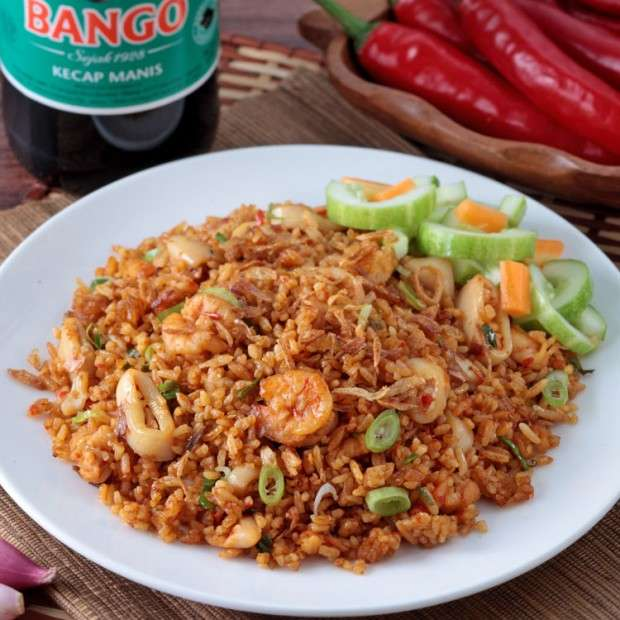

Nasi Goreng Jawa
Nasi goreng jawa merupakan masakan khas indonesia yang sangat digemari. Rasanya yang kaya dan proses pembuatannya yang sederhana menjadikannya pilihan paling populer bagi banyak orang. Artikel ini akan menunjukkan langkah-langkah memasak nasi goreng jawa yang enak.
Alat dan Bahan yang diperlukan
Alat:
- Wajan atau penggorengan
- Spatula atau sendok kayu
- Pisau dapur
- Talenan
- Piring atau mangkuk untuk menyajikan
Bahan:
- 2 piring nasi putih dingin (lebih baik jika nasi sudah dibiarkan semalaman)
- 2 sendok makan minyak goreng
- 2 siung bawang putih, cincang halus
- 3 siung bawang merah, cincang halus
- 2 buah cabai merah, iris tipis (sesuaikan dengan selera pedas)
- 1 buah cabai hijau, iris tipis
- 1 buah wortel, serut atau potong dadu kecil
- 100 gram daging ayam atau udang, potong kecil-kecil (opsional)
- 2 butir telur, kocok lepas
- 3 sendok makan kecap manis
- 1 sendok makan kecap asin
- 1 sendok teh garam
- 1/2 sendok teh merica bubuk
- 2 batang daun bawang, iris halus
- 1/2 sendok teh kaldu bubuk (opsional)
- Acar dan kerupuk untuk pelengkap (opsional)
Langkah-Langkah Memasak
-
Persiapan Bahan:
- Siapkan semua bahan yang diperlukan. Pastikan nasi sudah dingin dan terpisah dengan baik agar tidak menggumpal saat dimasak.
-
Tumis Bumbu:
- Panaskan minyak goreng di wajan dengan api sedang.
- Tumis bawang putih dan bawang merah hingga harum dan berwarna keemasan.
- Tambahkan irisan cabai merah dan cabai hijau, tumis hingga cabai sedikit layu.
-
Masak Daging:
- Jika menggunakan daging ayam atau udang, tambahkan potongan daging ke dalam wajan. Masak hingga daging matang dan berubah warna.
-
Masukkan Telur:
- Sisihkan bahan-bahan di pinggir wajan, lalu tuangkan telur kocok ke bagian tengah wajan. Aduk telur hingga matang dan tercampur rata dengan bumbu.
-
Campurkan Nasi:
- Tambahkan nasi putih ke dalam wajan. Aduk rata dengan bumbu dan telur hingga nasi tercampur dengan baik.
-
Beri Bumbu:
- Tambahkan kecap manis, kecap asin, garam, merica, dan kaldu bubuk (jika digunakan). Aduk rata hingga semua bumbu meresap ke dalam nasi.
-
Final Touch:
- Masukkan irisan daun bawang, aduk sebentar hingga daun bawang layu.
-
Penyajian:
- Sajikan Nasi Goreng Jawa di atas piring atau mangkuk. Nikmati dengan acar dan kerupuk jika diinginkan.
Tips:
- Gunakan nasi dingin agar tekstur nasi goreng lebih baik.
- Sesuaikan tingkat kepedasan sesuai dengan selera pribadi.
- Tambahkan bahan pelengkap seperti ayam, udang, atau sosis untuk variasi.